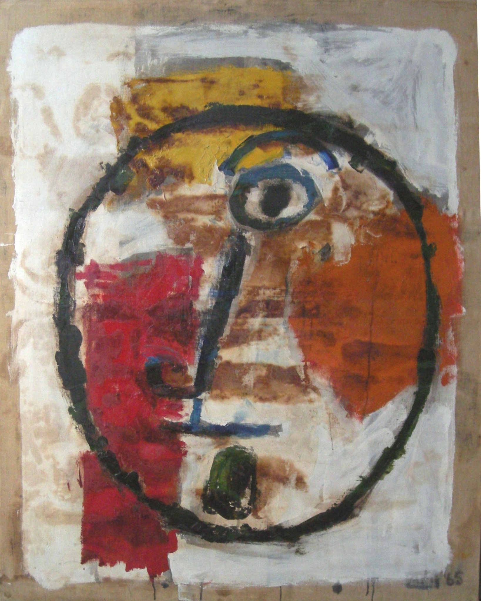

Anna Mayerson
1906 – 1984
Artist Biography
Anna Mayerson was born in Vienna to a German Jewish family and studied art at the Vienna Academy and the Kunstgewerbemuseum in Zurich before fleeing Vienna for England in 1938. She studied at the Slade School of Art in London and had solo shows at the Modern Art Gallery in 1942 and the Leger Gallery in 1943, both in London. In 1946 she took part in a show of five artists at the Redfern Gallery, others including Jankel Adler, Raoul Ubac and Graham Sutherland and in 1948 she had an exhibition with one other artist at the Hanover Gallery. Her career in England was interrupted as Mayerson went to live in Taormina, Sicily from 1949-1959. During this period she exhibited extensively in Europe and Truman Capote described drawings for the front-piece of his 1951 novel The Grass Harp as ‘superb – beyond anything’. She had a solo show in Galeria Odyssia in Rome in 1961 and two one-person exhibitions at Annely Juda Fine Art in London in 1971 and 1972. Numerous mixed exhibitions included A.I.A., Leicester Galleries, Arts Council and London Group. Stylistically Mayerson began her career as a figurative artist but from the 1950s to mid-1960s painted in a bold abstract expressionist style, often using bitumen and metalwork in her paintings and constructions. From the mid-1960s Mayerson brought back figurative motifs, notably of heads and faces. Ben Uri Gallery and Somerville College, Oxford hold her work.

Untitled, 1965